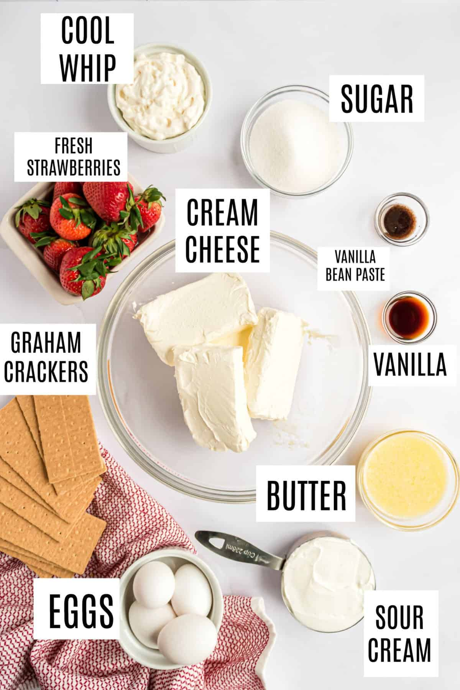

Cheesecake

A delicious home made cheesecake
Ingredients:
- 1 1/2 cups (150g) graham cracker crumbs
- 1/4 cup (60g) granulated sugar
- 1/2 cup (115g) unsalted butter, melted
- 4 packages (32 ounces or 900g) cream cheese, softened
- 1 1/4 cups (250g) granulated sugar
- 1 teaspoon vanilla extract
- 4 eggs
- 2/3 cup (160ml) sour cream
- 2/3 cup (160ml) heavy cream
- 1 cup (240ml) sour cream
- 2 tablespoons granulated sugar
- 1 teaspoon vanilla extract
For the Crust:
For the Cheesecake Filling:
For the Topping:
Instructions:
In a mixing bowl, combine the graham cracker crumbs, 1/4 cup of granulated sugar, and melted butter. Mix until the crumbs are evenly coated. Press the mixture into the bottom of a 9-inch (23cm) springform pan to form the crust. Use the back of a spoon or a flat-bottomed glass to pack it down evenly. Place the pan in the refrigerator while you prepare the cheesecake filling.
In a large mixing bowl, beat the softened cream cheese until it's creamy and smooth. Add 1 1/4 cups of granulated sugar and 1 teaspoon of vanilla extract. Beat until well combined. Add the eggs one at a time, beating well after each addition. Finally, mix in the 2/3 cup of sour cream and 2/3 cup of heavy cream until the mixture is smooth and creamy.
Pour the cheesecake filling over the graham cracker crust in the springform pan. Tap the pan on the counter a few times to remove any air bubbles. Bake in the preheated oven for about 45-50 minutes, or until the edges are set and the center is slightly jiggly. Turn off the oven and leave the cheesecake in the oven for about an hour with the door ajar.
In a small bowl, mix together 1 cup of sour cream, 2 tablespoons of granulated sugar, and 1 teaspoon of vanilla extract.
Remove the cheesecake from the oven and spread the sour cream topping over the warm cheesecake. Let the cheesecake cool to room temperature, then refrigerate it for at least 4 hours or overnight to set.
Slice the cheesecake and serve with your favorite toppings like fresh berries, fruit compote, or chocolate sauce. Enjoy your homemade cheesecake!